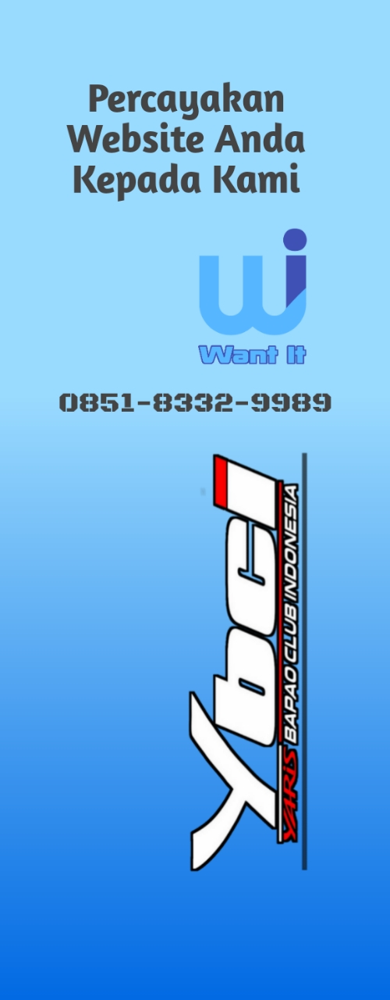
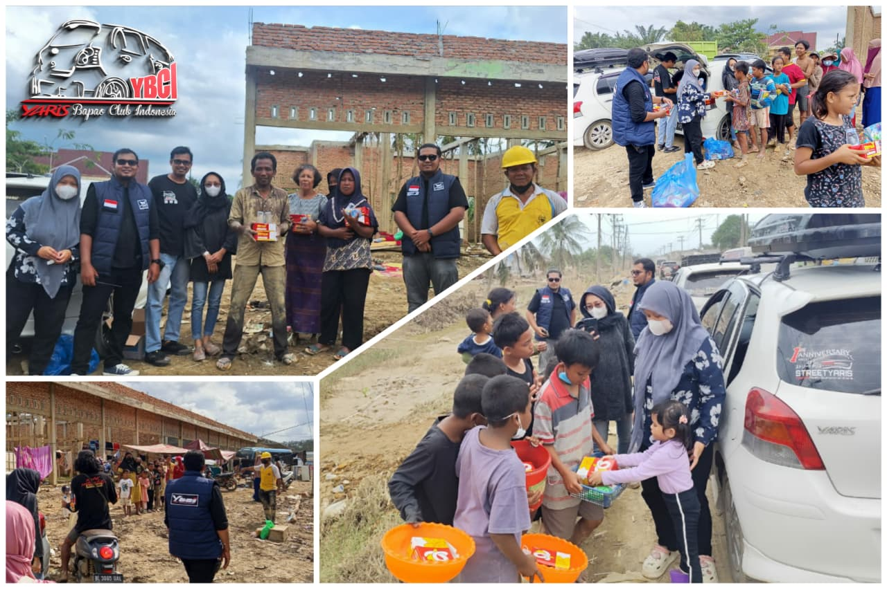

🔗 Want It


Medan – Dalam suasana penuh kebersamaan di bulan suci Ramadan, komunitas Yaris Bapao Club Indonesia (YBCI) wilayah Aceh dan Sumatera Utara menggelar kegiatan buka puasa bersama (Bukber) di Kota Medan. Kegiatan ini menjadi momen istimewa bagi para member untuk berkumpul, mempererat silaturahmi, serta memperkuat rasa kekeluargaan di dalam komunitas. Acara bukber ini dihadiri oleh member YBCI dari berbagai daerah, baik dari Aceh maupun Sumatera Utara. Beberapa anggota bahkan rela menempuh perjalanan cukup jauh demi bisa hadir dan bertemu langsung dengan sesama member. Kehadiran para anggota bersama keluarga menambah hangat suasana kebersamaan dalam kegiatan tersebut. Kegiatan diawali dengan sesi kumpul santai antar member, di mana para peserta saling berbincang, berbagi pengalaman, serta memperkenalkan member baru yang bergabung dalam komunitas. Momen ini dimanfaatkan untuk mempererat hubungan antar anggota yang selama ini lebih sering berinteraksi melalui media sosial atau grup komunikasi komunitas. Menjelang waktu berbuka puasa, seluruh peserta bersama-sama menikmati hidangan yang telah disiapkan oleh panitia. Suasana penuh keakraban terasa saat para member duduk bersama, berbagi cerita, dan menikmati kebersamaan dalam satu meja. Setelah berbuka puasa, kegiatan dilanjutkan dengan sesi ramah tamah serta diskusi ringan mengenai agenda kegiatan komunitas yang akan datang. Dalam kesempatan tersebut, perwakilan komunitas menyampaikan bahwa kegiatan bukber ini merupakan salah satu agenda yang rutin dilaksanakan setiap bulan Ramadan. Selain sebagai bentuk ibadah dan kebersamaan di bulan yang penuh berkah, kegiatan ini juga menjadi sarana mempererat solidaritas antar member YBCI Aceh–Sumut. “Kami berharap kegiatan seperti ini dapat terus mempererat hubungan kekeluargaan di antara member. Komunitas ini bukan hanya sekadar tempat berkumpul bagi pecinta otomotif, tetapi juga menjadi wadah persaudaraan yang saling mendukung satu sama lain,” ungkap salah satu perwakilan member yang hadir. Antusiasme para peserta terlihat dari tingginya partisipasi dalam kegiatan tersebut. Banyak member yang berharap kegiatan serupa dapat terus dilaksanakan di masa mendatang dengan skala yang lebih besar dan melibatkan lebih banyak anggota. Dengan terselenggaranya kegiatan buka puasa bersama ini, diharapkan hubungan antar member YBCI Aceh dan Sumatera Utara semakin solid serta mampu menjaga kekompakan komunitas dalam berbagai kegiatan, baik di bidang otomotif maupun kegiatan sosial yang bermanfaat bagi masyarakat.